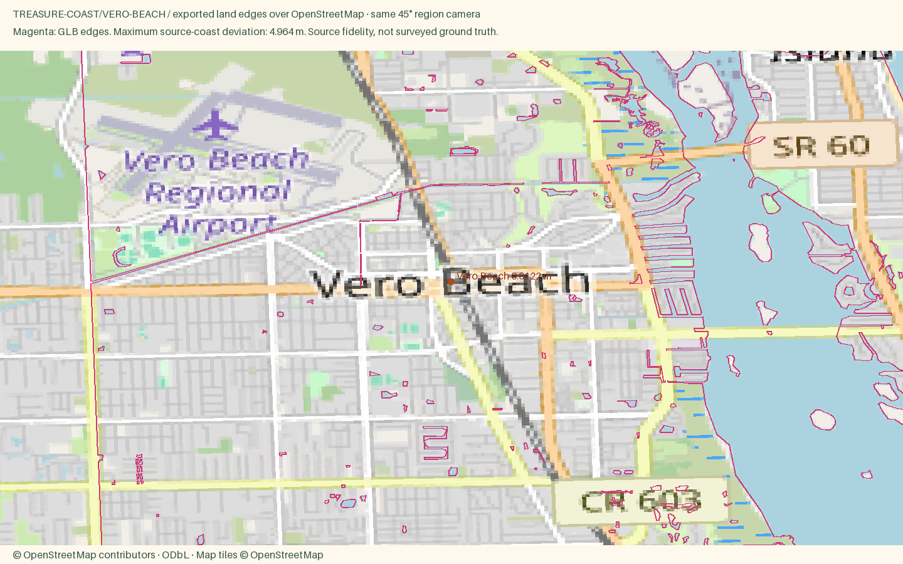

Vero Beach
Open atlas · Accuracy CSV · Sourced medians
Region
Vero Beach
Open districtA quietly polished town with strict height limits, an oceanside village of shops and a serious arts scene.
Source alignment

Manual fixes
- District palettes were selected editorially from local or regional character references; these colors are not a surveyed facade inventory.
- Added six coastal and riverfront communities to complement the existing six Treasure Coast cities. Source bounds include real downtowns, lagoon crossings and barrier-island context.
- Palm City has no town-label node in the snapshot. Used the real Old Palm City place node (154183414) as its explicitly identified riverfront representative anchor.
- Existing Census land context continues beyond the OSM data rectangle, avoiding artificial water edges at the package boundary.